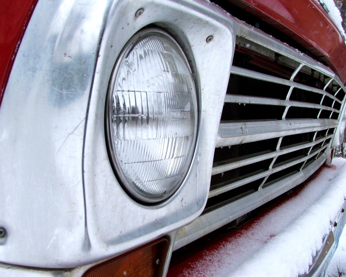
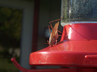
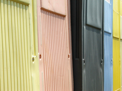

Next Photo
-
Vote
Snow Covered Ford
My dad's 1968 Candy Apple Red Ford pickup. It was snowing when I took the picture, The red looked amazing against the brightness of the snow. I got the color and an interesting perspective, which gives the photo most of its appeal.
My dad restored this truck as a project of love, and it looks great.
More...
Title: Snow Covered Ford
Description: My dad's 1968 Candy Apple Red Ford pickup. It was snowing when I took the picture, The red looked amazing against the brightness of the snow. I got the color and an interesting perspective, which gives the photo most of its appeal.
My dad restored this truck as a project of love, and it looks great.
Keywords: candy apple red ford snow depth color
Hidden: n
Date added: Wed Sep 20 17:36:53 CDT 2006
Date taken: Thu Dec 08 09:51:25 CST 2005
Camera: FUJIFILM.FinePix S5100 .
Resolution: 2129x1704
Mode: 0
Shutter speed: 810/100
Flash: 16
Exposure time: 10/2800
Iso: 100
Metering: 5
Aperture: 300/100
Focal length: 570/100
Artist: NathanielGuy Mahieu
Copyright: 2006 NathanielGuy Mahieu
Views: 2249

